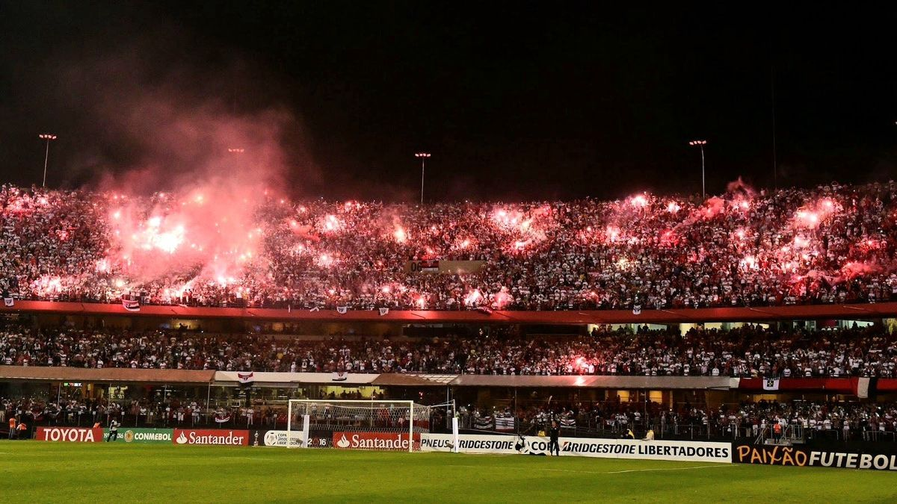
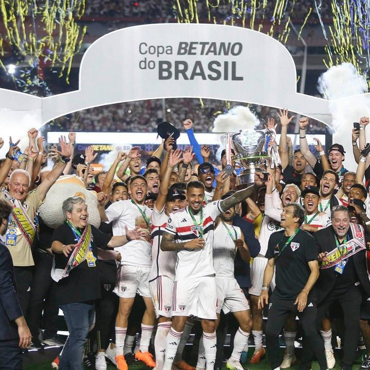
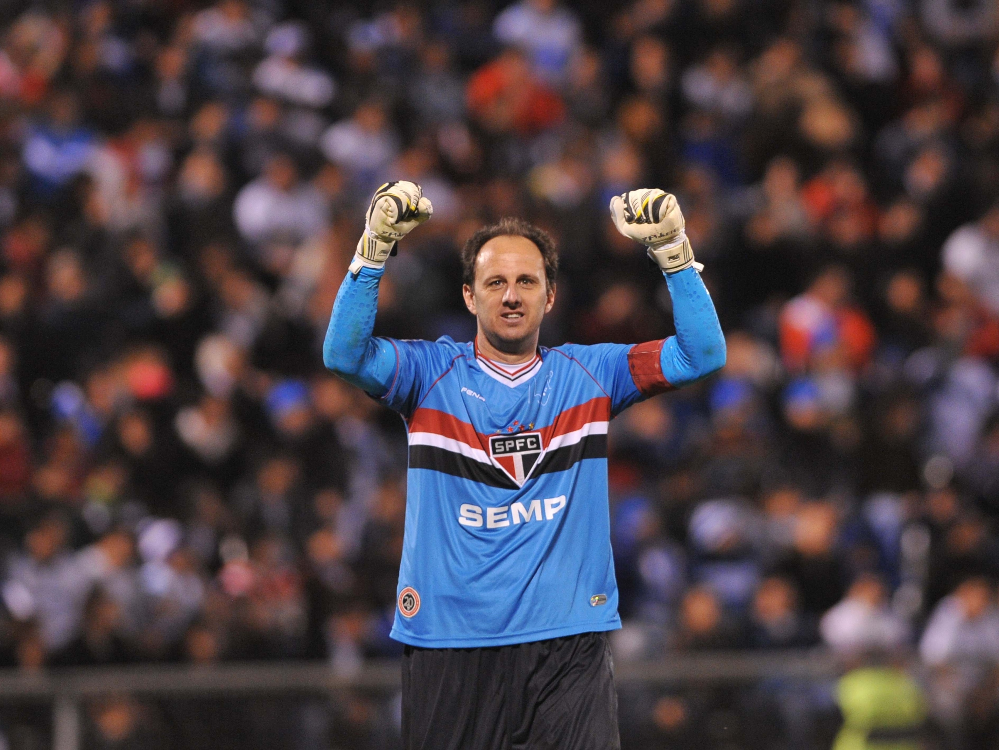
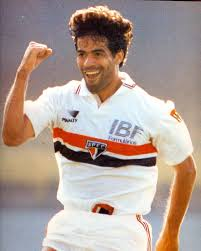
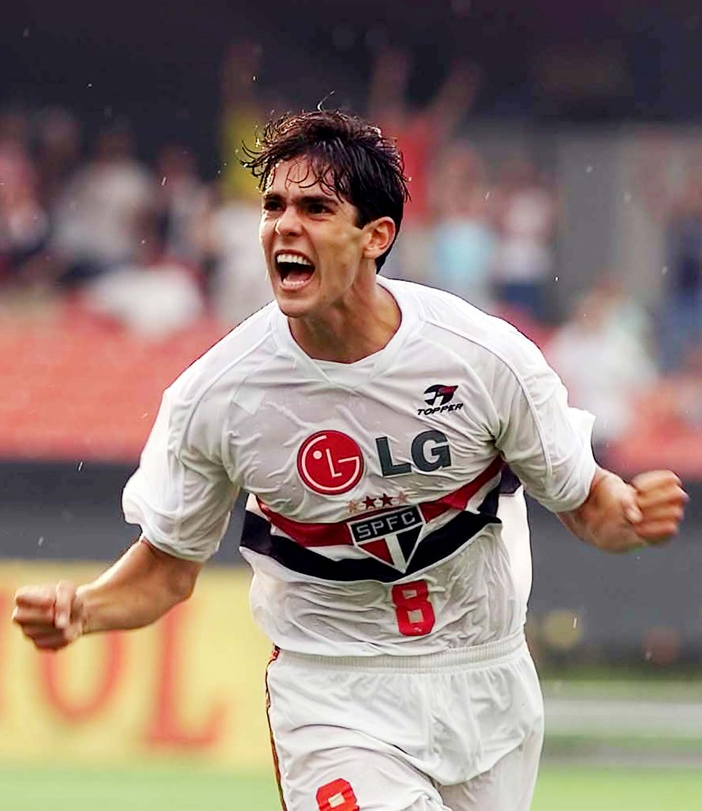
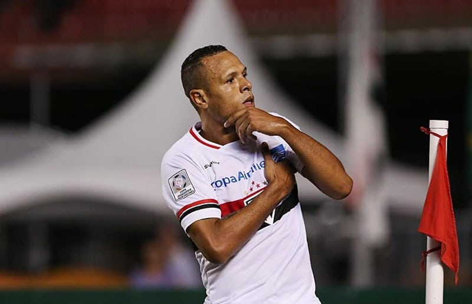
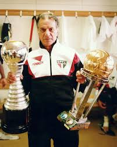
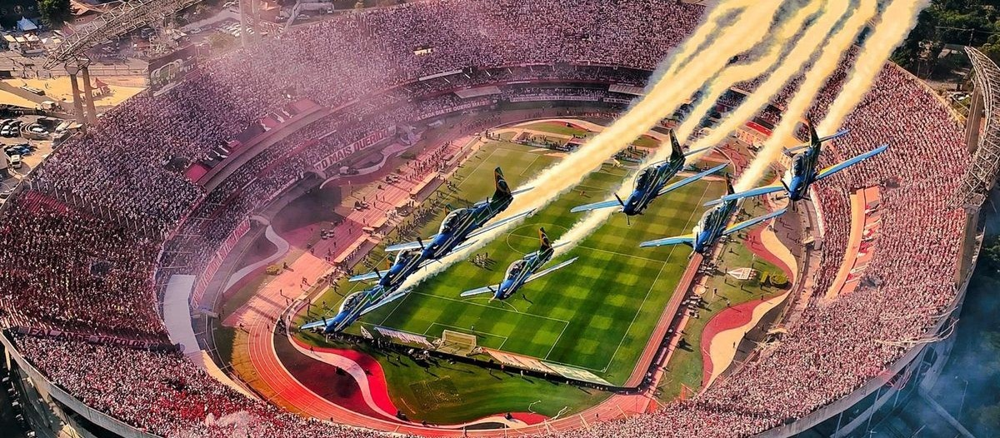

O São Paulo Futebol Clube foi fundado no dia 25 de janeiro de 1930, após a união de ex-dirigentes, jogadores e membros da Associação Atlética das Palmeiras e do Club Athletico Paulistano. Desde sua criação, o clube carregava consigo uma enorme ambição: se tornar um dos maiores times do futebol brasileiro.
Mesmo enfrentando dificuldades financeiras nos primeiros anos, o São Paulo rapidamente conquistou espaço no cenário paulista e nacional. Em 1935 o clube chegou a ser refundado, mas logo voltou ainda mais forte, consolidando uma identidade vencedora e apaixonante.

Ao longo das décadas, o São Paulo construiu uma trajetória repleta de títulos históricos. O clube se destacou no futebol paulista e se tornou uma potência nacional e internacional.
Durante os anos 90, comandado por Telê Santana, o Tricolor viveu uma das maiores eras da história do futebol mundial. O time conquistou duas Libertadores consecutivas, em 1992 e 1993, além de dois Mundiais vencendo gigantes europeus como Barcelona e Milan.
Em 2005, o São Paulo voltou ao topo do mundo ao conquistar a Libertadores e o Mundial de Clubes da FIFA contra o Liverpool, eternizando ainda mais sua história.

O São Paulo é reconhecido como um dos clubes mais vencedores do Brasil. Sua galeria possui títulos estaduais, nacionais e internacionais que marcaram gerações.
O Tricolor Paulista possui conquistas históricas como: Libertadores da América, Campeonatos Brasileiros, Copa Sul-Americana, Copa do Brasil, Supercopa Libertadores, Recopa Sul-Americana e três Mundiais.
Além dos títulos, o clube também é conhecido mundialmente por revelar grandes jogadores e por manter uma das torcidas mais apaixonadas do país.
Ao longo de sua história, o São Paulo Futebol Clube revelou e contou com diversos jogadores lendários que marcaram época dentro e fora do Brasil.
Entre os maiores ídolos estão Rogério Ceni, o goleiro com mais gols da história do futebol, Raí, símbolo da geração bicampeã mundial, e Telê Santana, treinador responsável por transformar o São Paulo em referência mundial de futebol bonito e vencedor.
Outros nomes históricos também marcaram o clube, como Kaká, Careca, Lugano, Müller, Mineiro, França, Luís Fabiano, Dagoberto, Hernanes e muitos outros jogadores eternizados pela torcida tricolor.






O Estádio Cícero Pompeu de Toledo, conhecido mundialmente como Morumbi, é a casa do São Paulo Futebol Clube e um dos maiores estádios do Brasil.
Sua construção começou na década de 1950 e representou um enorme sonho da torcida e da diretoria tricolor. O estádio foi crescendo aos poucos até se tornar um dos palcos mais históricos do futebol mundial.
O Morumbi já recebeu finais históricas, Libertadores, Mundiais, clássicos inesquecíveis e grandes shows internacionais. Além disso, o estádio se tornou um dos maiores símbolos da grandeza do São Paulo Futebol Clube.